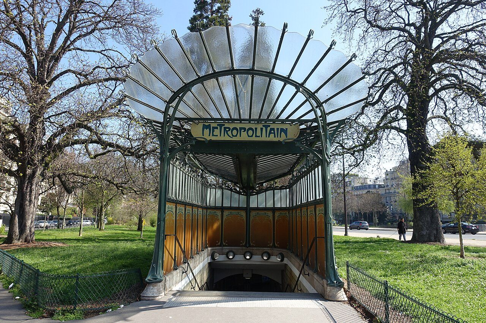

References / Architecture / 202
Guimard Métro entrance, Porte Dauphine, Paris
Hector Guimard’s cast-iron and glass station entrance: stalk-like green posts, a fan-shaped glass canopy like a dragonfly’s wings, and his hand-drawn “Métropolitain” sign.
- Source
- Wikipedia: Paris Métro entrances by Hector Guimard
- Creator
- Hector Guimard
- Made
- 1900–1913 for the series; most designs date from 1900, and the lettering reached its final form in 1902 (Wikipedia)
- Style
- Art Nouveau (agent-proposed, not yet reviewed by a person)
- Moods
- Organic, civic, flowing
- Evidence
- Downloaded and inspected Guilhem Vellut’s photograph of the Porte Dauphine édicule, taken 25 March 2017, on Wikimedia Commons.jpg) (1280 × 853 px copy of a 5472 × 3648 px original). Also compared Georges De Valkeneer’s 2015 night photograph of the Abbesses édicule on Commons.
- Reviewed
- Rights
- Open license, stored. License: CC-BY-2.0. Rights policy

Context
Wikipedia: Guimard designed the first generation of entrances to the Paris Métro between 1900 and 1913, mostly in 1900. He used cast iron set in concrete, painted green to look like weathered brass, and standard parts, including “M” cartouches and signs in his own lettering reading “Métropolitain” or “Métro”. His designs created the “Métro style” and popularised Art Nouveau. Wikipedia.
The roofed édicules, called libellules because they resemble dragonflies, had glass roofs and sometimes wall panels of enamelled lava. Two original type B édicules survive: Porte Dauphine, on its original site with its wall panels, and Abbesses, moved from Hôtel de Ville in 1974. Eighty-six Guimard entrances remain and are protected historical monuments. Wikipedia.
Observed
- The canopy is a fan of curved glass panes on thin iron ribs. It opens upward and outward at the front like a pair of wings.
- Two slender green posts rise from the ground on each side, curve inward at the top, and carry the canopy; their tops branch into thinner tendrils.
- Under the canopy, a pale yellow oval-ended plaque reads “METROPOLITAIN” in dark green capitals with flared strokes and unusual letter shapes: the O is narrow and pointed, and the letters vary in height.
- The side and back walls are panels of ochre-orange enamel, each with a round-topped inner frame; above them runs a band of glass in a grid of thin green bars.
- Colours are sea green iron, ochre and orange panels, a cream sign, and clear glass.
Why it belongs
The entrance applies the whiplash and the plant stem to industrial, standardised parts, which the style’s grammar names as a key difference from Arts and Crafts.
The sign is a model for Art Nouveau lettering: legible, but drawn by hand with curved, swelling strokes that match the ironwork.
Borrow
Frame a heading in a pale plaque with rounded ends and a dark outline, set in flared display capitals.
Use a fan of thin curved lines as a header or canopy shape instead of a flat bar.
Pair sea green with ochre and cream.
Measured
Machine-extracted by tools/image-traits.py on . Full measurement.
- Mean chroma
- 0.1
- Palette
- #1c221f 14%
- #313533 5%
- #c7e6f9 5%
- #3a4040 4%
- #7b858d 4%
- #d5d4d0 4%
- #8693a2 4%
- #95a3b1 4%

